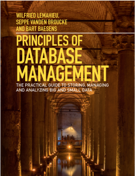

Laatste aanpassingen voor academiejaar 2021 - 2022.
| nr | datum | onderwerp |
|---|---|---|
| 1 | do 28-10-2021 | NoSQL 1: intro HC, key/value en document stores |
| 2 | do 18-11-2021 | NoSQL 2: advanced concepts, case studies (1) |
| 3 | do 25-11-2021 | NoSQL 3: map/reduce, replication, graph stores, case studies (2) |
| 4 | do 02-12-2021 | Transactie management HC/oefeningen |
| 5 | do 09-12-2021 | Database APIs 1: ORM mapping, Hibernate |
| 6 | do 16-12-2021 | Database APIs 2: H2, Sessy Library |
| 7 | do 23-12-2021 | Database APIs 3: Transacties, Sessy Library naar CouchDB |
Index pagina van alle hoorcolleges.
Onderstaande hoorcolleges zijn complementair aan degene die via Toledo worden aangeboden.

Dit opleidingsonderdeel focust enerzijds op drie soorten databases:
En anderzijds op twee toepassingen:
Dit reflecteert zich in de volgende selectie van hoofdstukken uit het handboek:
Merk op dat we dus niet het volledige boek behandelen. Dit zou ver voorbij het bereik van 4 studiepunten gaan.Toch blijft de aankoop verantwoord aangezien andere boeken die dezelfde thema’s behandelen nog een pak duurder zijn en ook altijd overbodige hoofdstukken voor dit opleidingsonderdeel bevatten. Bovendien zijn de niet-behandelde thema’s interessant voor extra-curriculaire zelfstudie.
Zie ook Studiegids UHasselt
De context en het overzicht worden aangereikt in het hoorcollege.
Als practicum wordt een grotere probleemstelling als project uitgewerkt. Alle aan te leren aspecten van databases komen in dit project aan bod. Studenten kunnen facultatief buiten het practicum extra thematische oefeningen oplossen.